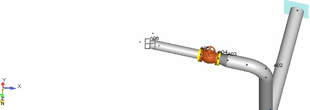

Adjusting the View and Completing the Segment
In this section, AutoPIPE’s custom view controls are introduced, and a pipe run and anchor are added to the
model to complete Segment A.
Because AutoPIPE models are three-dimensional, a variety of viewing controls has been provided to allow you to view the model from different perspectives. One method of changing the view includes the set of controls shown below.
1. Select View > Rotate > Right seven times.
- Next, select View > Rotate > Up six times. The graphic representation appears as shown in the
following figure.
.jpg)
- Note the control panel on the bottom of the model window. As an alternative to the icons, you can interactively pan the model by selecting a point in the modeling area, holding the mouse button down, and “dragging” the model to the desired view. For example, select a point and drag it to the right to “pan” the model. When the graphic is displayed as shown in the following figure, release the mouse button.

| Hint: |
As with the rotation technique mentioned above, you can gain quick access to the PAN feature by right-clicking in the model area. The PAN icon appears. Click and hold the left mouse button to drag the model to a new area of the screen. |
- Press OK to close the Zoom panel (or double-click with the mouse). The 3D model now appears as shown in the following figure.
-
.png) Now let’s complete the
pipe segment. Select Insert > Piping Components >
Run.
Now let’s complete the
pipe segment. Select Insert > Piping Components >
Run. - The Run Point dialog is displayed as shown in the following figure.
- Input 17 {5000} in the Length field, and then press OK. The model appears as shown in the following figure.